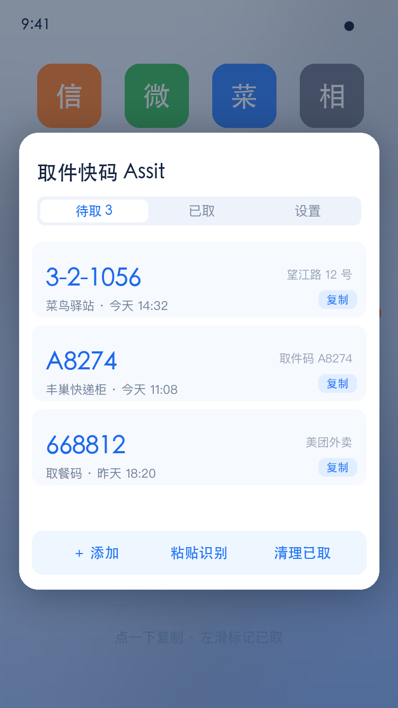
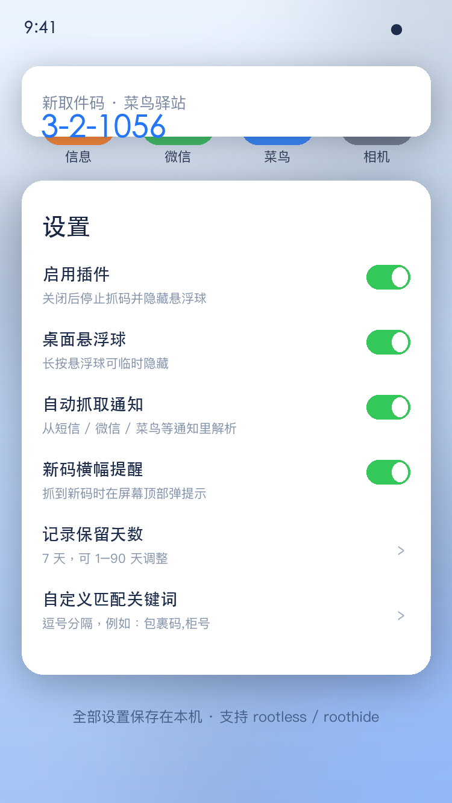

短信、微信、菜鸟、丰巢、取餐通知……取件码散落在各处，到驿站前总要翻半天。 取件快码 Assit 在通知到达时于本机解析出取件码 / 取餐码 / 货架号，按驿站归类去重， 收进桌面悬浮球；到店点开就能看，点一下复制，左滑标记已取。
这是 roothide 隐根专用包。无根（rootless）用户请改装「取件快码 Assit」标准包；两个包互斥，不要同时安装。
原生 arm64e本机解析不联网不上传 rootless 无根roothide 隐根
原生 arm64e本机解析不联网不上传 rootless 无根roothide 隐根
它做什么
- 自动抓码：Hook SpringBoard 的通知投递，把标题 / 副标题 / 正文拼起来做正则解析，识别「取件码：A8274」「货架 3-2-1056」「凭 668812 取件」等常见写法；支持自定义关键词。
- 按驿站归类：自动识别菜鸟驿站、丰巢、中通 / 圆通 / 申通 / 韵达 / 极兔、美团 / 饿了么等来源，提取地址，同一码 + 同一驿站自动去重。
- 悬浮球 + 角标：桌面可拖动吸附的蓝色小球，红点显示待取数量；点一下展开面板，长按临时隐藏（可在设置里恢复）。
- 待取清单：点条目即复制取件码，左滑可「标记已取 / 恢复待取 / 删除」；超过 24 小时未取的码会橙色高亮。
- 手动补录：面板底部可手动添加，或「粘贴识别」从剪贴板文本里一次抓出所有码。
- 新码横幅：抓到新码时在屏幕顶部弹一条 4 秒横幅，不用专门去翻通知。
- 设置：总开关、悬浮球、自动抓码、横幅提醒、保留天数（1–90 天）、悬浮球透明度、自定义匹配关键词，全部在插件面板内完成。

怎么用
- 安装后 注销 / Respring，桌面右侧出现「码」悬浮球。
- 之后收到取件短信或 App 通知，码会自动进列表（顶部横幅提示）。
- 到店点开悬浮球 → 点一下码即复制 → 取完左滑标记已取。
- 需要调整规则，进面板第三页「设置」。

兼容性
- iOS 15 – 16，注入
com.apple.springboard。 - 无根 rootless（Dopamine / palera1n）：安装本包
取件快码 Assit，架构iphoneos-arm64，包内路径/var/jb/…。 - 隐根 roothide（Dopamine-RootHide）：本包，架构
iphoneos-arm64e，用 roothide scheme 原生构建，包内路径无/var/jb前缀，已带 roothide 所需签名权益。 - 源码不硬编码任何越狱根路径，文件读写只走
NSHomeDirectory()与NSUserDefaults，同一份源码可产出两种包。
⚠️ 两个包互斥（已声明
Conflicts），只装与你越狱环境对应的那一个。
本包已声明与无根包 Conflicts，安装时包管理器会自动替换。
隐私与声明
所有解析、归类、存储都在本机完成，数据保存在 ~/Library/Application Support/QujianKuaiMa/codes.plist，
插件不请求任何网络权限、不上传任何内容、不读取其它 App 沙盒，也不修改原通知。卸载即删除本机记录。
本插件为个人学习研究产物，仅供自己设备使用，请勿用于商业用途。